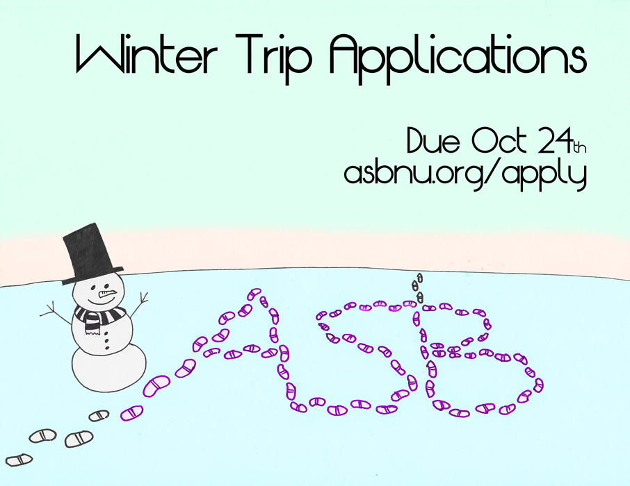

Winter 2012 Participant Application
Going on an ASB trip is one of the most rewarding experiences you'll have at Northwestern... at least in a one-week time frame. As a participant, you will make friends, learn about a social issue, and explore a new geographic region! But in all seriousness, some of your best Northwestern memories will be forged with us.
The ASB Winter Trip application must be submitted using the online form below no later than October 24th 11:59pm.
Questions should be directed to participant coordinator Emily Smith.
